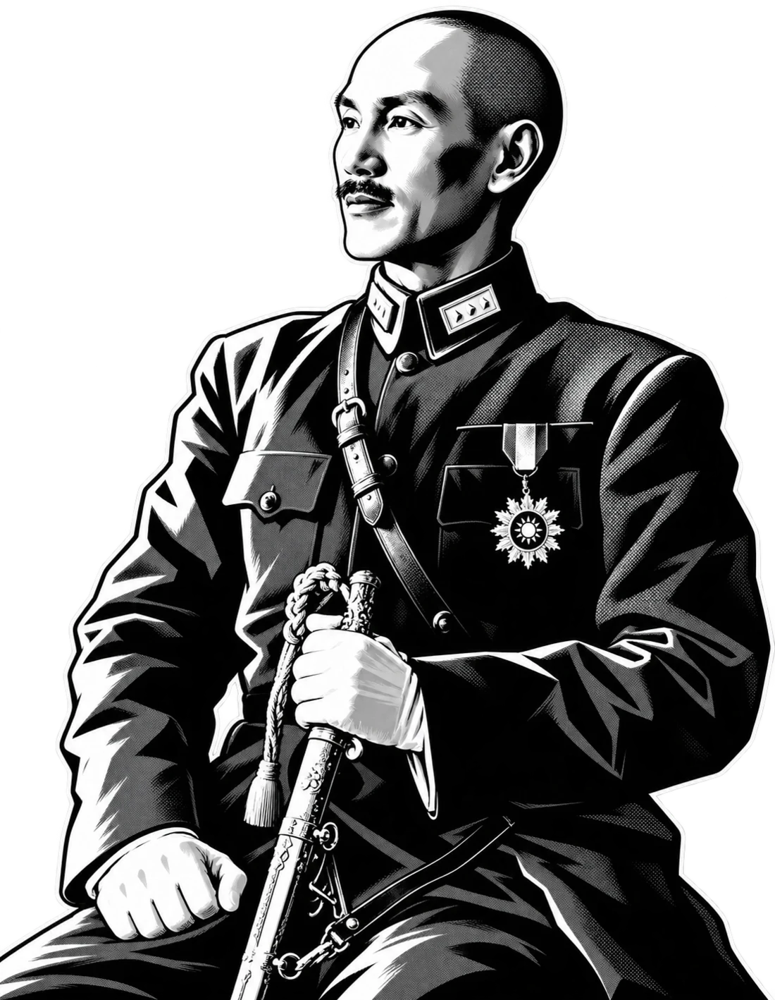
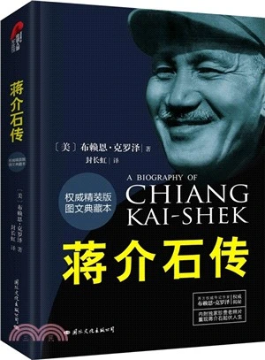

FILE 001 / A LIFE IN HISTORY1887 → 1975

HIS STORY.PORTRAIT REIMAGINED / 原創人物插畫
01THE BOOK一部傳記的閱讀入口
READ BEYOND THE NAME熟悉的名字。
熟悉的名字。
重新，認識。
他是軍人、政治人物，也身處不斷變化的家庭、同盟與對手關係中。這部傳記沿着個人經歷，展開一段與中國近現代歷史交織的人生。
從求學日本、北伐，到全面戰爭、戰後轉折與晚年，書中的二十四章把性格、政治行動與時代處境放在同一幅圖景中。

圖文典藏本國際文化出版公司 / ISBN 9787512506848
01 / THE APPROACH
從人物走入歷史
個人性格與重大事件並置，觀察決定是怎樣發生的。
02 / THE MATERIAL
訪談與文獻交織
出版方介紹提及當事人訪談及文獻收集，提供人物研究的入口。
03 / YOUR PERSPECTIVE
讓閱讀保留追問
留意作者的解釋，也對照史料，建立你自己的判斷。
02A LIFE / IN FRAMES照片裏的時代座標
他的一生。
時代的切面。
五個歷史現場，五種閱讀切口。
選擇年份，讓一張照片打開一段歷史。
FIG. 01 / EARLY YEARS
中國 / 早年還未成爲
還未成爲
歷史人物。
這張標註爲 1907 年的照片，留下蔣介石早年的面貌。此後，求學、軍事訓練與革命活動，將逐漸改變他的道路。
從書中繼續探索第 3 章 · 求學日本
青年時代的經歷，怎樣影響此後的信念與行動？
03ON THE WORLD STAGE1943 / 開羅
當一個人，
走入世界局勢。
01 / CHIANG KAI-SHEK
蔣介石
代表中國參與開羅會議，與盟國領導人商議戰爭與戰後安排。個人傳記在這裏進入世界外交的現場。
04BEYOND THE PUBLIC FACE身份之外，關係之中
公共身份之外，
還有另一面。
婚姻、家庭與父子關係，
讓人物傳記擁有另一種尺度。
1927 / WEDDING PORTRAIT
一段婚姻，也是一條閱讀線索。
1927 年，蔣介石與宋美齡結婚。本書以「蔣氏再婚」設章，提示讀者從婚姻與家庭關係進入人物經歷。此後，宋美齡也出現在國際外交的現場。
照片來源 ↗05CHOOSE YOUR READING PATH從真實目錄走進這本書
從哪一頁，
開始你的追問？
二十四章，串聯人物的一生。
選擇一個主題，查看相關章節與原創導讀。
06THE NEXT CHAPTER IS YOURS讓判斷，抵達閱讀之後
歷史的另一面，
由你翻開。
布賴恩·克羅澤 著 / 封長虹 譯
國際文化出版公司 · 精裝圖文典藏本
- 版本索引
- ISBN 9787512506848
- 出版年份
- 2014
- 內容結構
- 24 章 + 後記
外部平臺的價格、庫存與試讀範圍以其頁面爲準。
ONE LIFE.
MANY QUESTIONS.
MANY QUESTIONS.